Lab 3¶
The purpose of this assignment is as follows.
- to familiarize you with the filter design tools in Matlab,
- to compare the complexity of various IIR filters and their dependency on filter specifications,
- to familiarize you with the implementation of infinite impulse response (IIR) filtering using MSP-EXP432P401R,
- to compare the performance of various IIR implementation styles.
Infinite Impulse Response Filter¶
An IIR filter is a digital filter described by the following input/output relationship
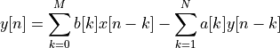
where 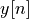 is the current filter output, 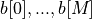 are
the feedforward filter coefficients, 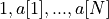 are the feedback
filter coefficients, and 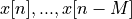 are the current input and
 previous inputs.
previous inputs.
An IIR filter has a feedforward order and a feedback order  .
In practice, and are often equal so that you can simply refer
to the order of the IIR filter as meaning both feedforward and feedback order.
.
In practice, and are often equal so that you can simply refer
to the order of the IIR filter as meaning both feedforward and feedback order.
To compute an output of this filter, one needs to know the previous
inputs as well as the previous outputs. The objective of this assignment
will be to design an IIR filter and develop an implementation in C. Next, you will
evaluate the frequency response of your design, and demonstrate that it meets the
filter specifications. Finally, you will compare the computational cost of various
IIR realizations.
IIR filters they tend to require lower orders for a given filter characteristic, when compared to FIR filters. However, IIR filters have less desirable (non-linear) phase response, and their internal feedback can lead to instability. We are primarily concerned with the correct implementation of the IIR design using single-precision floating-point precision. In a later assignment, we will study the optimized implementation of the IIR design – and we will investigate the impact of non-linear phase and instability.
Infinite Impulse Response Filter Specifications¶
In this assignment you have to design two IIR filters.
Filter I:¶
The first IIR filter has the same specification as the filter specification for Lab 2. Create a Butterworth bandpass filter with a passband of 2500Hz to 3500Hz, a lower stop band for frequencies below 1500Hz, an upper stopband for frequencies above 4500Hz, a maximum passband ripple of 1dB, and a stopband minimum rejection of 40dB for both stop bands.
You can pick a sample rate that you like, as long as the filter meets the specifications.
Use Matlab’s filterDesigner tool and determine the filter order as well as the coefficients (single precision floating point) for the Butterworth filter.
Important
Question 1: Create a Butterworth bandpass filter with a passband of 2500Hz to 3500Hz, a lower stop band for frequencies below 1500Hz, an upper stopband for frequencies above 4500Hz, a maximum passband ripple of 1dB, and a stopband minimum rejection of 40dB for both stop bands. Save the filter specification so that you can easily restore it later. Record the magnitude response as well as the phase response. Make a note of the filter order, which you will need to solve the next part of the section.
The Butterworth filter is a maximally flat filter, which means that it has minimal ripple in the passband. The downside of the Butterworth filter is that its transition bands are relatively wide. Other IIR filter structures, such as Chebyshev Type-I and Type-II filters, and Elliptic filters, allow for a steeper transition band at the expense of passband ripple. Since our specification allows for a 1dB passband ripple, we can therefore reduce the filter order by switching from Butterworth to one of the other IIR types (such as Chebyshev Type-I, Type-II or Elliptic Filter). Conversely, a Chebyshev Type-I, Type-II or Elliptic IIR filter will be able to have steeper transition band edges for the same filter order constant as a Butterworth filter.
Filter II:¶
The second IIR filter is derived from the first filter. The second IIR filter has the same filter order as the first filter, but you have to make the transition bands as narrow as possible. You will do this by substituting the Butterworth design for another IIR type (such as Chebyshev Type-I, Type-II or Elliptic Filter) while simultaneously narrowing the transition bands. The design completes when you have a filter with the same filter order as Filter I, but with the steepest possible transition bands.
Important
Question 2: What is the filter type and the transition bandwidth of the filter you have created? Record its magnitude response as well as the phase response.
Infinite Impulse Response Filter Implementation¶
The second part of the lab is to implement filter I and filter II using a C program.
- Filter I must be implemented using single-precision floating point coefficients as a direct-form I structure using second-order-stages (SOS).
- Filter II must be implemented using single-precision floating point coefficients as a transpose direct-form II structure using second-order-stages (SOS).
The filterDesigner tool will allow you to generate these coefficients as include files
in C. To learn about the characteristics of a direct-form I and transpose direct-form II filter,
refer to lecture 5 or to the textbook Chapter 4.2.
The format of the include files generated by Matlab deserves a closer look. Here is an example of a fourth-order Butterworth filter generated as two second-order-stages (SOS).
1 #define MWSPT_NSEC 5 2 const int NL[MWSPT_NSEC] = { 1,3,1,3,1 }; 3 const real32_T NUM[MWSPT_NSEC][3] = { 4 { 5 0.4433953762, 0, 0 6 }, 7 { 8 1, 0, -1 9 }, 10 { 11 0.4433953762, 0, 0 12 }, 13 { 14 1, 0, -1 15 }, 16 { 17 1, 0, 0 18 } 19 }; 20 const int DL[MWSPT_NSEC] = { 1,3,1,3,1 }; 21 const real32_T DEN[MWSPT_NSEC][3] = { 22 { 23 1, 0, 0 24 }, 25 { 26 1, -1.159571767, 0.5372180343 27 }, 28 { 29 1, 0, 0 30 }, 31 { 32 1, 0.2169253677, 0.3766086996 33 }, 34 { 35 1, 0, 0 36 } 37 };
- The
NUMarray contains the numerator of the transfer function, and it holds theb[k]coefficients. TheDENarray contains the denominator of the transfer function, and it holds thea[k]coefficients. - There are five rows in each of
NUMandDEN. Each second-order stage uses two rows, while the final row describes a global gain . The transfer function of the filter can be described as 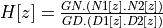. where 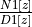 is the first second-order stage, 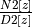 is the second second-order stage, and 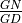 is the global gain . - In each row pair that captures a second-order stage, the first row represents
a gain while the second row represents the filter coefficients. For example, the first
two rows of
NUMspecify the following transfer function: 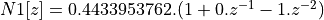.
1 const real32_T NUM[MWSPT_NSEC][3] = { 2 { 3 0.4433953762 /* N0 */, 0, 0 4 }, 5 { 6 1 /* b0 */, 0 /* b1 */, -1 /* b2 */ 7 },
- Similarly, the first two rows of
DENspecific the following transfer function: 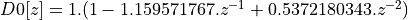.
1 { 2 1 /* D0 */, 0, 0 3 }, 4 { 5 1 /* a0 */, -1.159571767 /* a1 */, 0.5372180343 /* a2 */ 6 },
- The last row of both
NUMandDENspecify an overall gain factor
Important
Question 3: Write a C program implementation of a direct-form I Butterworth bandpass filter according to the specifications of Filter I in the previous specification.
Next, Write a C program implementation of a transpose direct-form II bandpass filter according to the specifications of Filter II in the previous specification.
Note
It’s a good idea to try to use the coefficients directly as generated from the Matlab include file. The include file generate from Matlab’s filter designer defines a single-precision floating point type as real32_T whereas the ARM DSP library uses the float32_t. It also makes use of an external include file twmtypes.h. You can either cut-and-paste the coefficient values into your C program, or else include the generated coefficient file and ensure that the C compiler understands that real32_T and float32_t are the same data type.
Infinite Impulse Response Filter Evaluation¶
As the third step in the design of IIR filters, you will compute their amplitude response, and determine their computational load on the processor. In the last lab, you completed these two steps as follows.
- To compute the spectrum, make use of the spectrum function on the oscilloscope.
- To compute the performance, make use of the
uint32_t measurePerfSample(msp432_sample_process_t _cb)function provided inMSP432_BOOSTXL_LIB.
In this lab, we will study two additional techniques to complete these tasks.
Compute the spectrum using Matlab¶
Most USB scopes, including the Bitscope BS05 used in this course, allow to download captured data to your PC. The ‘recorder’ function enables you to download multiple traces in the form of a comma-separated-value (CSV) file. Please study the Capture Control Functions to find how to record the waveform. Keep in mind that the waveform comes with a specific sample frequency and trace length (the number of samples per trace). The sample frequency of the scope may be different from the sample frequency of your filter.
Using a set of traces stored in a CSV, you can next import these into Matlab and analyze them
using the pwelch function. Read the documentation that comes with the pwelch function
to study how to use it. The following is a recipe to obtain such a spectrum.
Important
Keep in mind that the following is just an example. You have to fine-tune the settings for your application; you have to read the documentation to understand each of these commands and their parameters.
- Set the scope recording configuration so that the sample rate shown is at the sample rate of the board, or double of it. For example, if you design your filter at 16KHz sample rate, set the trace sample rate at 16KHz or 32KHz. You cannot set this number directly; you have to to it indirectly by choosing the proper timebase (ms/div), and the proper buffer sample size.
- Make sure that the filter application is running, and that you feed noise at the filter input, so that the signal recorded on the oscilloscope is filtered noise.
- Press ‘RECORDER’ followed by ‘New’. You can now specify a file name that will record the traces. Now, press ‘Ready’ followed by ‘Record’. The traces are now written in a file.
- After some time, press ‘Recording’ followed by ‘Close’. This ends the recording process.
- Open Matlab, and read in the trace file. The following commands assume the file name used is ‘trace.csv’.
% read the CSV file
T = readtable('trace.csv');
% extract the trace data
a = table2array(T(:,10:size(T,2)));
% show to pwelch spectrum, eliminate DC offset
pwelch(a' - mean(a'));
% extract pwelch spectrum for each trace
[f,s] = pwelch(a' - mean(a'));
% plot the average power spectrum
plot(s,10*log10(mean(f')));
This shows the following power spectrum; note that this spectrum is sampled at twice the sample frequency of the DSP program, so you see an additional image as well.
Important
Question 4: Compute the spectrum of Filter I using Matlab. Compare the measure result to
the spectrum computed in filterDesigner.
Next, compute the spectrum of Filter II using Matlab. Compare the measure result to
the spectrum computed in filterDesigner.
Measure the filter performance using a scope¶
Rather than measuring clock cycle, you can also directly measure the time spent during the
computation. The MSP432_BOOSTXL_LIB toggles a GPIO pin just before calling the
processSample function. Consult the source code (msp432_boostxl_init.c) and the
ADC interrupt function in particular. Note how the ‘duty pin’ is toggled right before and
after the user callback is called. The duty pin is on GPIO port 5 pin 7; consult
the MSP-EXP432P401R Development Kit User’s Guide to
identify the proper pin on your MSPEXP432P401R kit where you can record this signal.
1 void ADC14_IRQHandler(void) { 2 uint64_t status; 3 static int recursive = 0; 4 5 if (recursive) errorledon(); 6 7 status = ADC14_getEnabledInterruptStatus(); 8 ADC14_clearInterruptFlag(status); 9 10 if (status & ADC_INT0) { 11 glbPingADC[0] = ADC14_getResult(ADC_MEM0); 12 13 recursive = 1; 14 dutypinhigh(); 15 glbPingDAC[0] = glbSampleCallback(glbPingADC[0]); 16 dutypinlow(); 17 recursive = 0; 18 19 DAC8311_updateDacOut(glbPingDAC[0]); 20 } 21 22 }
Important
Question 5: Measure the time needed to compute Filter I as accurately as possible using a scope, by observing the toggle duration on the duty pin as described above.
Next, measure the time needed to compute Filter II as accurately as possible using a scope, by observing the toggle duration on the duty pin as described above.
Finally, compare both times and explain any differences you observe.
Wrapping Up¶
- The answer to this lab consists of a written report which will be submitted on Canvas by the deadline. Refer to the General Lab Report Guidelines for details on report formatting. You will only submit your written report on Canvas. All code developed must be returned through github.
- Follow the principal structure of the report you’ve used for Lab 2 (taking into account any feedback you have received).
- Follow the five questions outlined above to structure your report. Use figures, screenshots and code examples where appropriate. Please work out the answers in sufficient detail to show your analysis.
- Make sure that you add newly developed projects to github: Use the Team - Share pop-up menu and select your repository for this lab. Further, make sure that you commit and push all changes to the github repository on GitHub classroom. Use the Team - Commit pop-up menu and push all changes.
- Be aware that each of the laboratory assignments in ECE4703 will require a significant investment in time and preparation if you expect to have a working system by the assignment’s due date. This course is run in “open lab” mode where it is not expected that you will be able to complete the laboratory in the scheduled official lab time. It is in your best interest to plan ahead so that you can use the TA and instructor’s office hours most efficiently.
Good Luck
Grading Rubric¶
| Requirement | Points |
|---|---|
| Question 1 Analysis | 15 |
| Question 2 Analysis | 15 |
| Question 3 Analysis | 15 |
| Question 4 Analysis | 15 |
| Question 5 Analysis | 15 |
| All projects build without errors or warnings | 5 |
| Code is well structured and commented | 5 |
| Git Repository is complete and up to date | 5 |
| Overall Report Quality (Format, Outline, Grammar) | 10 |
| TOTAL | 100 |